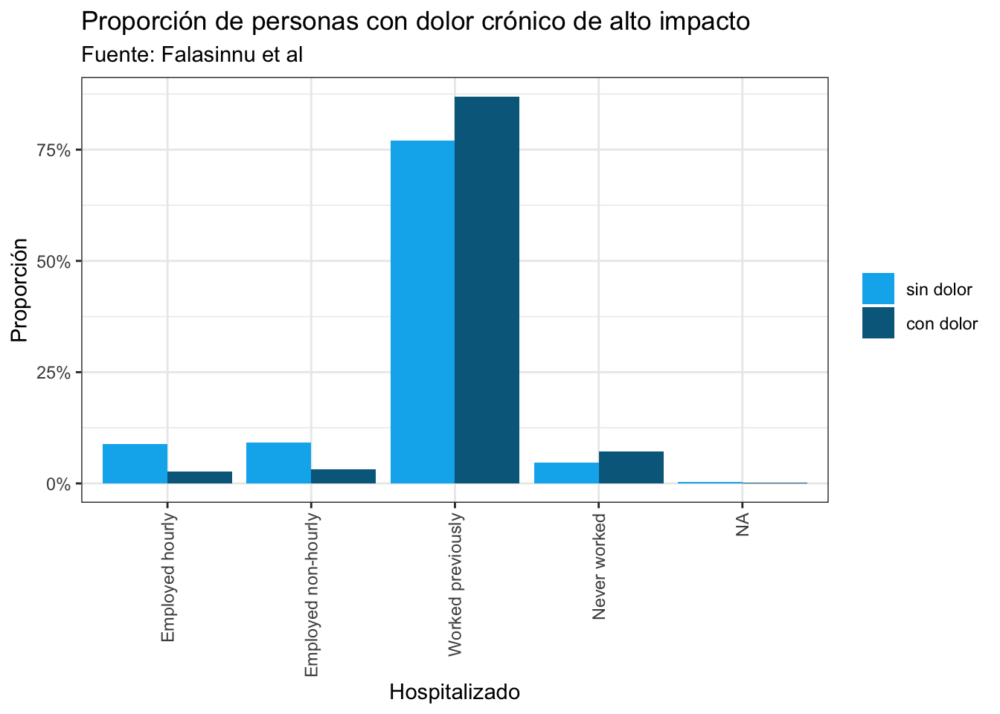

install.packages("tidymodels")3 Un modelo de predicción
Comenzaremos con un ejemplo de modelo de predicción. La idea de iniciar con éste es mostrar cómo funciona el flujo de trabajo. Por ahora utilizaremos tidymodels una herramienta que te permite aplicar muchos modelos distintos usando exactamente la misma forma de escribir. Veremos la lógica tras cada punto y construiremos nuestro modelo. Finalmente, compararemos dos modelos distintos.
3.1 El modelo
Nuestro modelo busca predecir las covariables individuales que determinan Dolor Crónico de Alto Impacto (HICP). La base de datos que utilizaremos es Falasinnu2023.RData. Ésta proviene del National Health Interview Survey (NHIS) 2016 y fueron utilizados en Falasinnu et al. (2023) para predecir dolor crónico de alto impacto (HICP). Las siguientes variables están presentes en la base:
| Variable | Descripción |
|---|---|
studyid |
Identificador único |
psu |
Pseudo-PSU (muestreo) |
strata |
Pseudoestrato (muestreo) |
weight |
Peso muestral (muestreo) |
HICP |
Dolor Crónico de Alto Impacto (variable de interés) |
age |
Edad |
sex |
Sexo |
hhsize |
Número de personas en el hogar |
born |
Nacionalidad |
marital |
Estado civil |
region |
Región |
race |
Raza/etnia |
education |
Educación |
employment.status |
Situación laboral |
poverty.status |
Estado de pobreza |
veteran |
Veterano |
insurance |
Cobertura de seguro médico |
sex.orientation |
Orientación sexual |
worried.money |
Preocupado por el dinero |
good.neighborhood |
Buen vecindario |
psy.symptom |
Síntomas psicológicos |
visit.ED |
Número de veces en Urgencias |
surgery |
Número de cirugías en los últimos 12 meses |
dr.visit |
Tiempo transcurrido desde las visitas al médico |
cancer |
Cáncer |
asthma |
Asma |
htn |
Hipertensión |
liver.disease |
Enfermedad hepática |
diabetes |
Diabetes |
ulcer |
Úlcera |
stroke |
Accidente cerebrovascular |
emphysema |
Enfisema |
copd |
EPOC |
high.cholesterol |
Colesterol alto |
coronary.heart.disease |
Enfermedad coronaria |
angina |
Angina de pecho |
heart.attack |
Infarto de miocardio |
heart.disease |
Enfermedad cardíaca |
arthritis |
Artritis y reumatismo |
crohns.disease |
Enfermedad de Crohn |
place.routine.care |
Lugar habitual de atención rutinaria |
trouble.asleep |
Dificultad para conciliar el sueño |
obese |
Obesidad |
current.smoker |
Fumador actual |
heavy.drinker |
Bebedor empedernido |
hospitalization |
Días de estancia hospitalaria |
better.health.status |
Mejor estado de salud |
physical.activity |
Actividad física |
3.2 Preliminares
Tip
Recuerda que para instalar un paquete como tidymodels basta con:
y que éste proceso se hace una sola vez.
Comencemos instalando tidymodels y utilizando Falasinnu2023.RData como la fuente de datos.
#Librerías de los modelos y de análisis de datos
library(tidymodels)
library(tidyverse)
library(gtsummary)
library(glmnet)
#Agregar esto siempre para que sepa R que debe priorizar tidymodels por
#encima de cualquier otra librería.
tidymodels_prefer()Carguemos la base de datos con load:
load("datos/Falasinnu2023.RData")3.3 Análisis exploratorio de los datos
Una vez cargada la base de datos podemos utilizar glimpse para ver las variables que contiene:
dat |> glimpse()Rows: 8,881
Columns: 49
$ studyid <chr> "20160000020101", "20160000250101", "2016000026…
$ psu <fct> 2, 2, 5, 57, 26, 46, 36, 12, 6, 55, 43, 4, 9, 3…
$ strata <fct> 149, 117, 149, 100, 136, 122, 103, 130, 121, 10…
$ weight <int> 1717, 4088, 2566, 1311, 2903, 3781, 1278, 2995,…
$ HICP <dbl> 0, 0, 0, 1, 0, 0, 0, 0, 0, 0, 1, 0, 0, 1, 0, 0,…
$ age <fct> 65+, 65+, 65+, 65+, 65+, 65+, 65+, 65+, 65+, 65…
$ sex <fct> Male, Male, Male, Male, Female, Female, Female,…
$ hhsize <int> 1, 2, 3, 1, 1, 1, 1, 2, 1, 1, 1, 1, 1, 1, 1, 2,…
$ born <fct> Born in US, Other place, Born in US, Born in US…
$ marital <fct> Divorced/separated, Married/with partner, Marri…
$ region <fct> South, Midwest, South, West, South, South, Sout…
$ race <fct> White, Others, White, White, Black, White, Whit…
$ education <fct> High school/GED, Bachelors degree or higher, So…
$ employment.status <fct> Worked previously, Employed non-hourly, Worked …
$ poverty.status <fct> 200-400% FPL, 400%+ FPL, 200-400% FPL, 400%+ FP…
$ veteran <fct> No, No, Yes, Yes, No, No, No, No, No, No, No, N…
$ insurance <fct> Medicaid/Medicare, Privately Insured, Other, Ot…
$ sex.orientation <fct> Heterosexual, Other, Heterosexual, Heterosexual…
$ worried.money <fct> No, No, Yes, No, Yes, No, No, No, Yes, No, Yes,…
$ good.neighborhood <fct> Yes, No, No, Yes, No, Yes, Yes, Yes, Yes, Yes, …
$ psy.symptom <fct> No, No, No, No, No, No, Yes, No, No, No, No, No…
$ visit.ED <fct> None, NA, None, None, None, None, One, None, No…
$ surgery <fct> None, None, None, One, None, None, None, One, N…
$ dr.visit <fct> <6 months, NA, <6 months, <6 months, <6 months,…
$ cancer <fct> No, Yes, No, No, No, Yes, Yes, No, Yes, No, Yes…
$ asthma <fct> No, No, No, No, No, No, No, No, No, No, Yes, No…
$ htn <fct> Yes, No, Yes, Yes, Yes, Yes, Yes, No, Yes, Yes,…
$ liver.disease <fct> No, No, No, No, No, No, No, No, No, No, No, No,…
$ diabetes <fct> No, No, No, No, No, No, No, No, Yes, No, No, No…
$ ulcer <fct> No, No, Yes, No, No, No, No, Yes, No, No, Yes, …
$ stroke <fct> No, No, No, No, No, No, No, No, No, No, Yes, No…
$ emphysema <fct> No, No, No, No, No, No, No, No, No, No, Yes, No…
$ copd <fct> No, No, No, No, No, No, No, No, No, No, No, No,…
$ high.cholesterol <fct> Yes, Yes, No, No, Yes, No, No, Yes, Yes, Yes, Y…
$ coronary.heart.disease <fct> No, No, No, No, No, No, No, No, No, No, Yes, No…
$ angina <fct> No, No, Yes, No, No, No, No, No, No, No, No, No…
$ heart.attack <fct> No, No, Yes, No, No, No, No, No, No, No, Yes, N…
$ heart.disease <fct> No, Yes, No, No, No, No, No, Yes, No, No, No, N…
$ arthritis <fct> No, No, Yes, Yes, Yes, No, Yes, No, No, No, Yes…
$ crohns.disease <fct> No, No, No, No, No, No, No, No, No, No, No, No,…
$ comorbidity <dbl> 2, 3, 5, 2, 3, 2, 3, 3, 4, 2, 10, 2, 5, 4, 4, 7…
$ place.routine.care <fct> No place, NA, Hospital/Clinic, Doctor's office,…
$ trouble.asleep <fct> No, NA, Yes, No, No, No, No, No, No, No, Yes, N…
$ obese <fct> No, No, No, Yes, No, Yes, No, No, No, No, Yes, …
$ current.smoker <fct> No, No, No, No, No, No, No, No, No, No, No, No,…
$ heavy.drinker <fct> No, No, No, No, No, No, No, No, No, No, No, No,…
$ hospitalization <fct> None, None, None, None, None, None, None, None,…
$ better.health.status <fct> No, No, No, No, No, No, No, No, No, No, No, Yes…
$ physical.activity <fct> Less, Less, Moderate, Less, Moderate, Less, Les…Notamos que la base de datos contiene un total de 8,881 individuos.
#Cambio la definición para que diga con dolor / sin dolor
dat <- dat |>
mutate(HICP_label = factor(HICP, labels = c("sin dolor", "con dolor")))Podemos ver cómo se distribuye todo con una tabla breve de resumen por algunas covariables:
dat |>
tbl_summary(
include = c("sex", "obese", "age", "employment.status"),
by = HICP,
)Characteristic |
0 |
1 |
|---|---|---|
| sex | ||
| Female | 4,442 (57%) | 691 (63%) |
| Male | 3,350 (43%) | 398 (37%) |
| obese | 2,219 (28%) | 482 (44%) |
| age | ||
| <65 | 0 (0%) | 0 (0%) |
| 65+ | 7,792 (100%) | 1,089 (100%) |
| employment.status | ||
| Employed hourly | 687 (8.8%) | 29 (2.7%) |
| Employed non-hourly | 712 (9.2%) | 34 (3.1%) |
| Worked previously | 6,003 (77%) | 947 (87%) |
| Never worked | 363 (4.7%) | 78 (7.2%) |
| Unknown | 27 | 1 |
| 1
n (%) |
||
Las covariables seleccionadas no son al azar son las que Şentürk et al. (2023) seleccionaron como covariables que afectaban el dolor de alto impacto.
Recuerda que lo mismo puede hacerse de manera más lenta con count y mutate. Por ejemplo para contar cuántos hubo por tipo de empleo:
#Creamos una nueva base que tenga la información de la proporción
proporcion_tbl_1 <- dat |>
group_by(`employment.status`, HICP_label) |>
count() |>
group_by(HICP_label) |>
mutate(proporcion = n / sum(n)) |>
ungroup()y que se puede representar gráficamente el conteo con ggplot2:
#Grafico
ggplot(proporcion_tbl_1) +
geom_col(aes(x = employment.status, y = proporcion, fill = HICP_label),
position = "dodge") +
theme_bw() +
scale_fill_manual("", values = c("deepskyblue2","deepskyblue4")) +
scale_y_continuous(labels = scales::percent_format()) +
labs(
x = "Hospitalizado",
y = "Proporción",
title = "Proporción de personas con dolor crónico de alto impacto",
subtitle = "Fuente: Falasinnu et al"
) +
theme(axis.text.x = element_text(angle = 90, hjust = 1, vjust = 0.5))
3.4 Modelo (versión 1)
El modelo que nos interesa construir es un modelo de clasificación que prediga si un nuevo paciente será o no con dolor crónico de alto impacto. Inicialmente lo que haremos será dividir nuestra base de datos en dos conjuntos: de entrenamiento y de prueba.
El conjunto de entrenamiento es para construir un modelo; el conjunto de prueba es para evaluar el modelo. Es decir, por un lado entrenamiento será usado para construir el modelo de predicción y por otro utilizaremos prueba para ver qué tan buen modelo es para predecir.
# Dividir los datos en entrenamiento y prueba
set.seed(235724)
data_split <- initial_split(dat, prop = 0.8) #La regla de dedo es 80% en entrenar / probar
train_data <- training(data_split)
test_data <- testing(data_split)Podemos ver que sí dividió los datos en aproximadamente el 80%:
train_data |> nrow()[1] 7104test_data |> nrow()[1] 1777Por otro lado utilizaremos un modelo de regresión logística:
# Especificar el modelo de regresión logística
logistic_model <- logistic_reg() |>
set_engine("glm")Se agrega finalmente una receta de lo que se desea hacer en este caso es modelar HIPC en tèrminos de sex, obesity y employment.status.
# Crear una receta para el preprocesamiento
rec <- recipe(HICP_label ~ sex + obese + employment.status, data = dat) Todo se agrega en R dentro de un workflow:
modelaje <- workflow() |>
add_recipe(rec) |>
add_model(logistic_model) #Pueden agregarse más modelos poniendo más add_models aquí!Finalmente ajustamos el modelo:
logistic_fit <- modelaje |>
fit(data = train_data)Y vemos cómo se ven los predichos usando predict:
# Predecir en los datos de prueba
logistic_preds <- logistic_fit %>%
predict(new_data = test_data) %>%
bind_cols(test_data)Podemos estimar la matriz de confusión para ver qué tan bueno es el modelo:
logistic_preds |>
conf_mat(truth = HICP_label, estimate = .pred_class) Truth
Prediction sin dolor con dolor
sin dolor 1533 238
con dolor 0 0Es un modelo muy malo pues a todos los predijo sin_dolor. Veamos un segundo modelo!
3.5 Modelo (versión 2)
En este caso utilizaremos un modelo LASSO. LASSO es un modelo de regresión logística que automáticamente selecciona las variables que mejor ayudan a predecir. Veremos con mayor profundidad este concepto más adelante por ahora ajustemos el modelo agregando a un nuevo workflow del que ya teníamos:
# Especificar el modelo de regresión logística
lasso_model <- logistic_reg(penalty = 0.2, mixture = 0.1) |>
set_engine("glmnet")Agregamos a un nuevo workflow:
modelaje_3 <- workflow() |>
add_recipe(
recipe(HICP_label ~ ., data = dat) |>
step_rm(studyid) |>
step_unknown(all_nominal_predictors()) |>
step_dummy(all_nominal_predictors()) |>
step_naomit(all_predictors())
) |>
add_model(lasso_model) Ajustamos
lasso_fit <- modelaje_3 |>
fit(data = train_data)Y vemos cómo se ven los predichos usando predict:
# Predecir en los datos de prueba
lasso_preds <- lasso_fit %>%
predict(new_data = test_data) %>%
bind_cols(test_data)Podemos estimar la matriz de confusión para ver qué tan bueno es el modelo:
lasso_preds |>
conf_mat(truth = HICP_label, estimate = .pred_class) Truth
Prediction sin dolor con dolor
sin dolor 1515 70
con dolor 0 159¡Mucho mejor!
El proceso de un modelo como vimos es entonces:
- Obtener un objetivo
- Procesamiento/transformación de los datos
- Dividir los datos en entrenamiento y prueba.
- Elegir el modelo
- Ajustar el modelo
- (Por ver) determinación de la calidad del modelo
3.6 Actividad 1
Con tu conocimiento (poco o mucho) de dolor crónico de alto impacto, construye un modelo logístico (no LASSO) distinto al que aquí se especifica. Llámale
modelo_3.Utilizando exactamente las mismas variables que yo utilicé cambia el modelo en
add_modelal siguiente de aprendizaje de máquina:
rf <- boost_tree(mode = "classification") |>
set_engine("xgboost")3.7 Actividad 2
- Compara los modelos realizados en la actividad 1. Determina cuál es el mejor modelo según las métricas de comparación.
3.8 Actividad 3
Utilizando la base de datos
datos/hechos_transito.rdsconsturye un modelo que prediga si dado un hecho de tránsito habrá o no personas fallecidas en función de las covariables.Construye un segundo modelo incluyendo todas las covariables excepto
folio,hora_evento,matricula_unidad_medicaysector. Utiliza el modelo que desees (yo recomiendo regresión LASSO pero puedes elegir lo que quieras).Compara ambos modelos y determina cuál es el mejor para predecir.